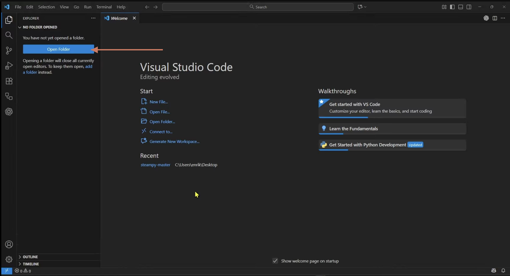
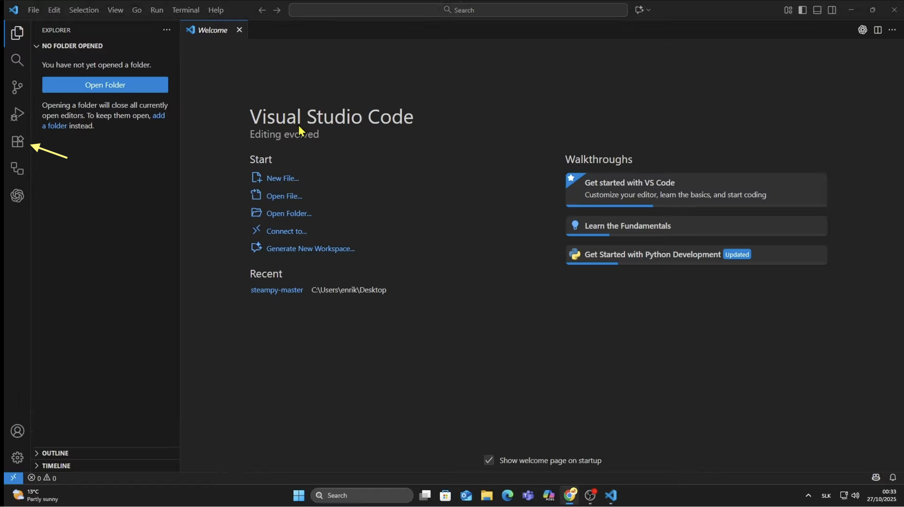
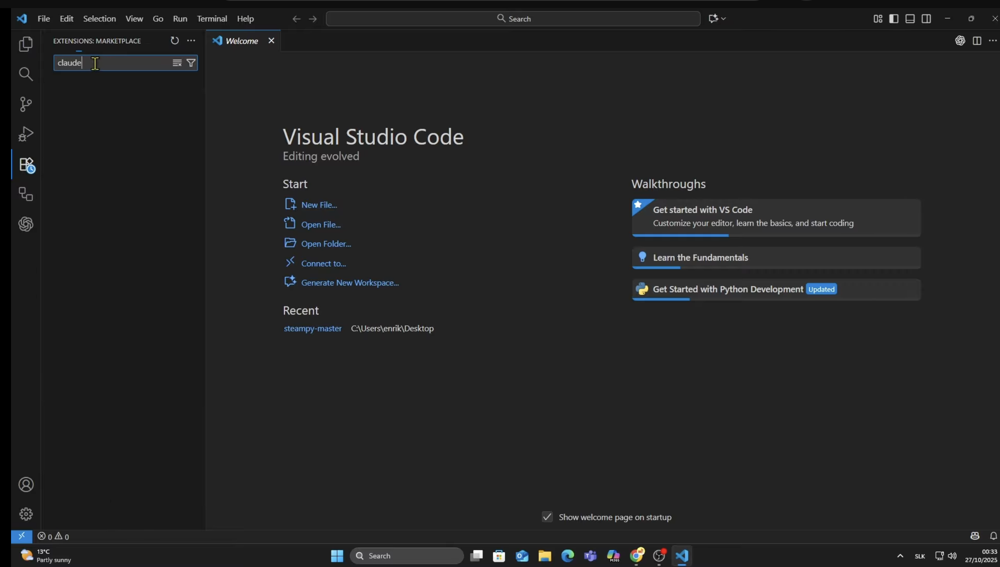
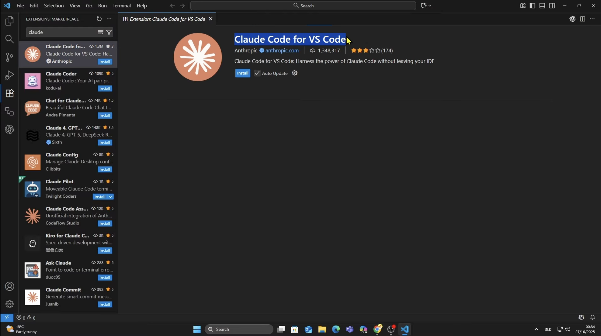
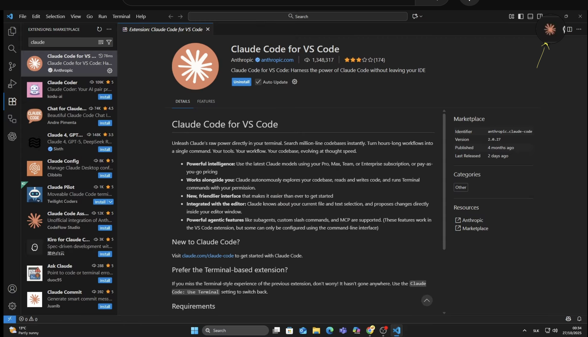

חלק ב׳ · סביבת העבודה
רגע לפני
שממשיכים.
שממשיכים.
לפני שאנחנו רצות קדימה, שנייה נעשה סדר.
כי יש כמה מקומות שאפשר לעבוד בהם עם קלוד קוד, ואם כרגע הכול מרגיש לכן כמו "רגע, למה יש כמה כאלה בכלל?" — זה מאוד הגיוני.
חלק מהאפשרויות נראות פשוטות ונעימות.
חלק נראות כמו משהו שפותחים בטעות ואז מיד סוגרים כדי לא להפעיל את הפנטגון.
ובפועל? הכול פשוט פחות דרמטי ממה שזה נראה.
כי יש כמה מקומות שאפשר לעבוד בהם עם קלוד קוד, ואם כרגע הכול מרגיש לכן כמו "רגע, למה יש כמה כאלה בכלל?" — זה מאוד הגיוני.
חלק מהאפשרויות נראות פשוטות ונעימות.
חלק נראות כמו משהו שפותחים בטעות ואז מיד סוגרים כדי לא להפעיל את הפנטגון.
ובפועל? הכול פשוט פחות דרמטי ממה שזה נראה.
אז בואו נבין מה זה מה,
מה מתאים להתחלה,
ומה אפשר להשאיר לשלב שבו אתן מרגישות קצת יותר בנוח וקצת פחות כאילו כל קליק הוא החלטה משפטית.
מה מתאים להתחלה,
ומה אפשר להשאיר לשלב שבו אתן מרגישות קצת יותר בנוח וקצת פחות כאילו כל קליק הוא החלטה משפטית.
כלי #1 — הכי חשוב להכיר
הטרמינל:
המסך השחור שסתם קיבל יחסי ציבור מפחידים.
המסך השחור שסתם קיבל יחסי ציבור מפחידים.
הטרמינל הוא פשוט חלון שבו כותבים למחשב בטקסט.
זה כל הסיפור.
אין כפתורים, אין תפריטים, אין אייקון חמוד של "לחצי כאן והכול יהיה בסדר".
כן, הוא נראה כמו משהו מסרטי האקרים. מסך שחור, אותיות מוזרות, תחושה שעוד רגע מישהו יגיד "יש לנו 30 שניות לפרוץ לשרת".
אבל ברוב הזמן הוא הרבה פחות דרמטי. זה פשוט מקום שבו אומרות למחשב מה לעשות בצורה ישירה.
קלוד קוד עובד שם מעולה — זה בערך הבית הטבעי שלו.
אין כפתורים, אין תפריטים, אין אייקון חמוד של "לחצי כאן והכול יהיה בסדר".
כן, הוא נראה כמו משהו מסרטי האקרים. מסך שחור, אותיות מוזרות, תחושה שעוד רגע מישהו יגיד "יש לנו 30 שניות לפרוץ לשרת".
אבל ברוב הזמן הוא הרבה פחות דרמטי. זה פשוט מקום שבו אומרות למחשב מה לעשות בצורה ישירה.
קלוד קוד עובד שם מעולה — זה בערך הבית הטבעי שלו.
לא צריך לאהוב אותו.
רק להבין שהוא פחות "האקר מסוכן" ויותר "חלון בלי איפור".
רק להבין שהוא פחות "האקר מסוכן" ויותר "חלון בלי איפור".
bash
~$ claude
✓ Claude Code ready
─────────────────────
~$ מה אנחנו בונות היום?
כל מה שתרצי. מאיפה מתחילות?
─────────────────────
~$
ועכשיו — איפה מוצאות אותו בפועל?
🍎 Mac
⌘ + Space → מקלידות "terminal" → Enter
🔍
terminal
🖥️
Terminal
Applications › Utilities
🪟 Windows
לחצן Windows → מקלידות "powershell" → Enter
🔍
powershell
🖥️
Windows PowerShell
נראה מפחיד. זה פחות מפחיד ממה שנראה. ממש.
שלב 1 — התקנה
פקודה אחת (קל!)
מעתיקות את הפקודה הזו, מדביקות בטרמינל, לוחצות Enter.
מה מעתיקות ←
npm install -g @anthropic-ai/claude-code
ככה זה נראה בטרמינל ↓
bash
~$ npm install -g @anthropic-ai/claude-code
✓ added 1 package in 4s
~$
זה נראה טכני מאוד. בפועל: העתקה, הדבקה, Enter.
שלב 2 — הפעלה
claude: ככה קוראות לו לבוא
אחרי שההתקנה הסתיימה — מקלידות:
~$
claude
הוא ישאל לאמת.
זה בדיוק כמו "כניסה לחשבון" בכל אתר —
רק שבמקום כפתור כחול, יש Enter שחור.
מאשרות. מחכות שנייה.
זה בדיוק כמו "כניסה לחשבון" בכל אתר —
רק שבמקום כפתור כחול, יש Enter שחור.
מאשרות. מחכות שנייה.
וזהו. אתן בפנים. פחות דרמטי ממה שזה נראה.
כלי #2 — אופציונלי לגמרי
VS Code: חזק, חכם, וקצת יותר מדי למנה ראשונה.
VS Code הוא עורך קוד מקצועי —
מקום שמיועד לאנשים שרוצים לעבוד על קוד עם יותר שליטה, יותר כלים, יותר סדר.
ובואו, הרבה יותר דברים על המסך בבת אחת.
ובואו, הרבה יותר דברים על המסך בבת אחת.
אם הטרמינל מרגיש כמו לדבר ישירות עם המחשב,
VS Code מרגיש כמו להיכנס לחדר בקרה.
יש חלונות, יש צדדים, יש טאבים, יש צבעים, ויש רגע קטן שבו את שואלת את עצמך:
"אני עובדת, או שאני מטיסה משהו?"
יש חלונות, יש צדדים, יש טאבים, יש צבעים, ויש רגע קטן שבו את שואלת את עצמך:
"אני עובדת, או שאני מטיסה משהו?"
אפשר לחשוב עליו כמו המעבר מ-Canva לפוטושופ.
לא כי זה אותו דבר — אלא כי פתאום יש הרבה יותר כוח בידיים שלך,
וגם הרבה יותר סיכוי לשבת שתי דקות מול המסך ולהעמיד פנים שאת מבינה מה קורה.
זה כלי מעולה.
פשוט לא חייבים להתחיל מהשלב של "אני והמערכת כרגע לומדות להכיר".
הפרק הזה ישאר כאן כשתהיו מוכנות.
פשוט לא חייבים להתחיל מהשלב של "אני והמערכת כרגע לומדות להכיר".
הפרק הזה ישאר כאן כשתהיו מוכנות.
אז מה כדאי לי לבחור?
את מה שלא יגרום לכן לסגור את הלפטופ.
התחילו כאן
🖥️
Desktop App
המקום הכי ידידותי להתחיל ממנו.
נקי, פשוט, ברור.
פחות חלונות, פחות רעש, פחות תחושה שצריך תואר כדי לשאול שאלה.
אם אתן רוצות להתחיל לעבוד עם קלוד בלי להסתבך עם הסביבה —
תתחילו פה.
נקי, פשוט, ברור.
פחות חלונות, פחות רעש, פחות תחושה שצריך תואר כדי לשאול שאלה.
אם אתן רוצות להתחיל לעבוד עם קלוד בלי להסתבך עם הסביבה —
תתחילו פה.
כבר התקנתן ✓
⬛
טרמינל
שווה להכיר, גם אם לא מתאהבים.
הוא נראה קשוח, אבל בפועל הוא פשוט ישיר.
לא צריך לעבור לגור שם —
כן כדאי לדעת שהוא קיים ושיום אחד אולי תשתמשו בו בלי לגלגל עיניים.
הוא נראה קשוח, אבל בפועל הוא פשוט ישיר.
לא צריך לעבור לגור שם —
כן כדאי לדעת שהוא קיים ושיום אחד אולי תשתמשו בו בלי לגלגל עיניים.
טוב להכיר
💙
VS Code
כשתרגישו שמה שיש כבר עובד לכן,
ועכשיו בא לכן קצת להשתדרג —
הוא יחכה שם, מלא בעצמו, אבל יעיל.
לא עכשיו. לא חובה. אף פעם לא חובה.
ועכשיו בא לכן קצת להשתדרג —
הוא יחכה שם, מלא בעצמו, אבל יעיל.
לא עכשיו. לא חובה. אף פעם לא חובה.
לשלב מאוחר יותר
אין פה תשובה נכונה. יש רק את הדרך שתגרום לכן להתחיל.
כי עדיף להתחיל בפשטות מאשר לדחות הכול רק כי התוכנה נראית כאילו היא יודעת עליכן דברים.
כי עדיף להתחיל בפשטות מאשר לדחות הכול רק כי התוכנה נראית כאילו היא יודעת עליכן דברים.
אפשר לדלג כרגע על זה או להתקין — לבחירתכן
לפני שמתחילות
ועכשיו —
מתקינות VS Code.
מתקינות VS Code.
ספוילר: לחלק מכן זה יעבוד מיד,
ולחלק מכן המחשב יעשה קטע.
זה לא אישי.
זה פשוט מחשב.
אם נתקעתן:
אפשר לשאול בקבוצה,
או יותר מהר — לצלם מסך ולשאול את קלוד מה לעשות.
claude.ai ←
ולחלק מכן המחשב יעשה קטע.
זה לא אישי.
זה פשוט מחשב.
אם נתקעתן:
אפשר לשאול בקבוצה,
או יותר מהר — לצלם מסך ולשאול את קלוד מה לעשות.
claude.ai ←
בעיה בהתקנה = לא סוף הדרך.
רק עוד שאלה לקלוד.
רק עוד שאלה לקלוד.
כלי #2 — אופציונלי
VS Code
זו תוכנה חינמית של Microsoft.
היא מאפשרת לעבוד עם קלוד קוד במקום שבו רואים את הקוד —
גם אם כרגע את מסתכלת עליו כמו על תפריט בסינית.
וזה דווקא טוב.
כי גם בלי להבין כל שורה,
עדיין אפשר לראות שיש שם משהו,
איפה הוא נמצא,
ומתי קלוד התחיל להשתולל קצת יותר מדי.
היא מאפשרת לעבוד עם קלוד קוד במקום שבו רואים את הקוד —
גם אם כרגע את מסתכלת עליו כמו על תפריט בסינית.
וזה דווקא טוב.
כי גם בלי להבין כל שורה,
עדיין אפשר לראות שיש שם משהו,
איפה הוא נמצא,
ומתי קלוד התחיל להשתולל קצת יותר מדי.
מורידים מ־vscode.com
הצעד הראשון ב-VS Code
הדבר הראשון שעושים:
פותחים תיקייה.
פותחים תיקייה.
לא צריך להבין את כל VS Code כדי להתחיל.
צריך רק לפתוח את התיקייה של הפרויקט.
התיקייה הזו אומרת לקלוד:
זה האזור שלך. פה עובדים.
הוא יכול לראות רק מה שיש בפנים,
ולעבוד רק שם.
לא בשולחן העבודה, לא בתיקיות אחרות,
ולא בדברים שבכלל לא התכוונתן שייגע בהם.
צריך רק לפתוח את התיקייה של הפרויקט.
התיקייה הזו אומרת לקלוד:
זה האזור שלך. פה עובדים.
הוא יכול לראות רק מה שיש בפנים,
ולעבוד רק שם.
לא בשולחן העבודה, לא בתיקיות אחרות,
ולא בדברים שבכלל לא התכוונתן שייגע בהם.
בקיצור, התיקייה היא הדרך להגיד לקלוד:
פה כן. שם לא. תודה רבה.
פה כן. שם לא. תודה רבה.

עוד כמה קליקים וקלוד כבר בפנים.
(תהיו חזקות, אנחנו כמעט שם!!)

לוחצות על אייקון התוספים — הריבועים בצד. כן, אלה.

מקלידות claude code — בדיוק ככה, בלי קישוטים.

יש שם כמה. שימו לב לקחת את הנכון של Anthropic.
אם קופצת הודעה "Trust Publisher" — אל דאגה, זה נורמלי. לוחצות אישור וממשיכות.

הלוגו הכתום מופיע למעלה. זה הסימן שקלוד בפנים.
כשרוצות לפתוח חלון שיחה חדש עם קלוד — לוחצות על הלוגו הזה.